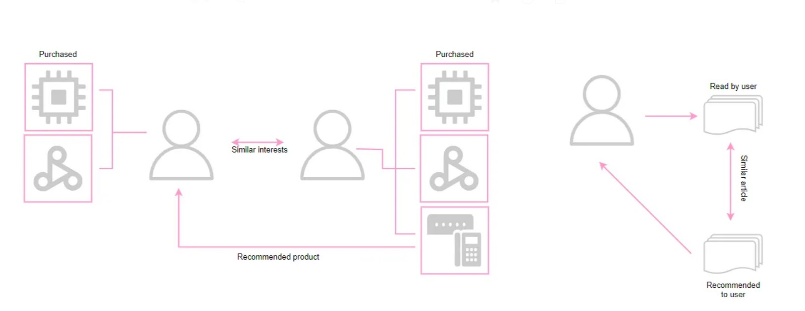
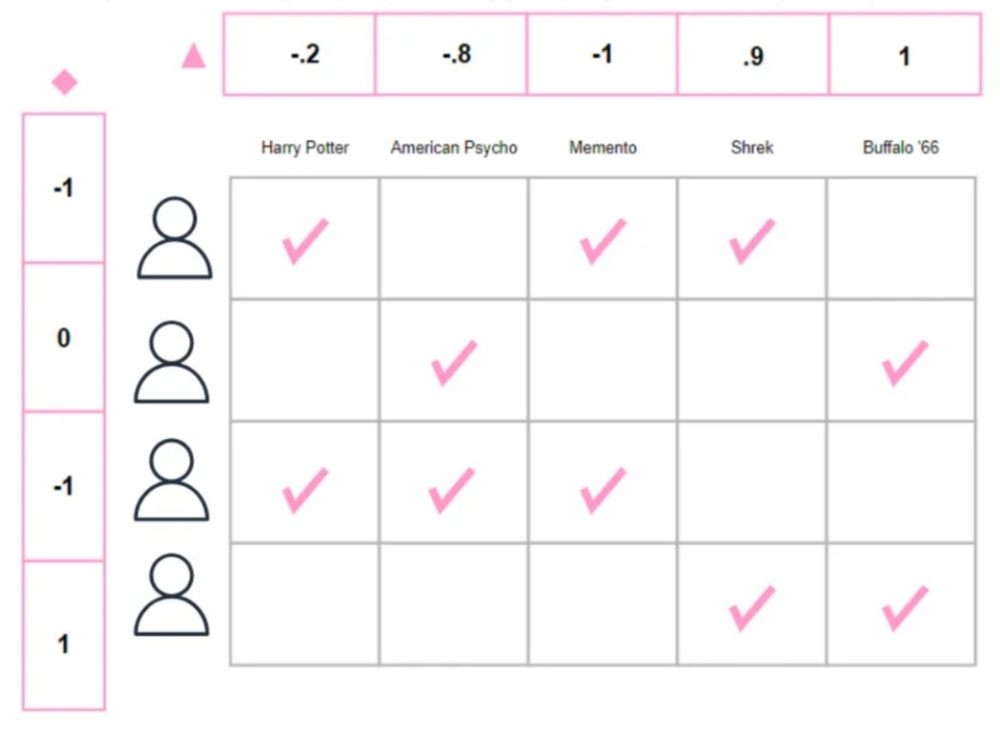
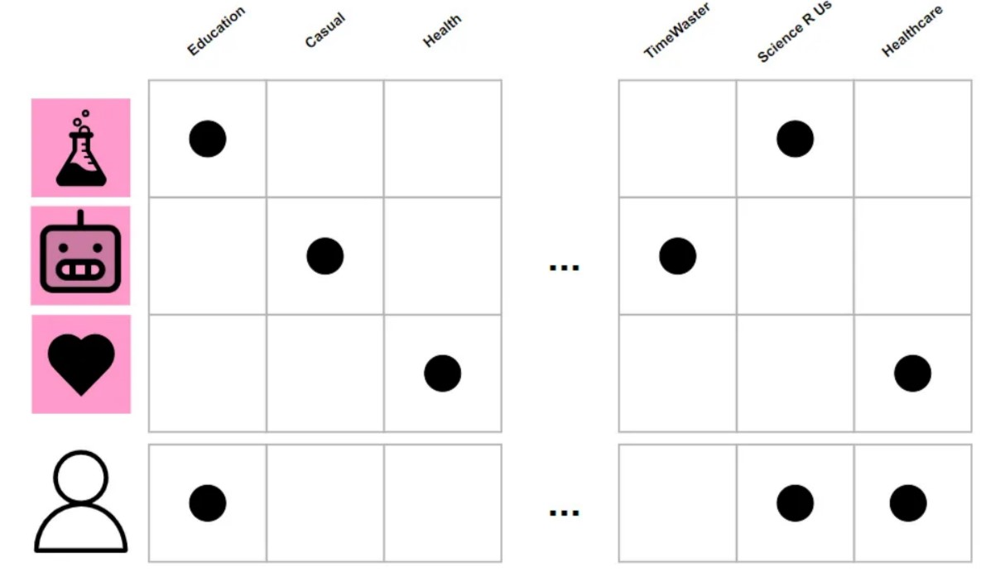
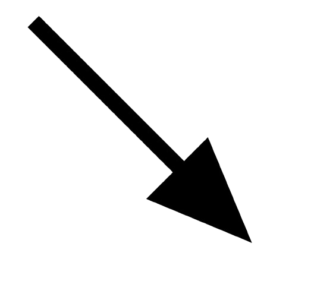
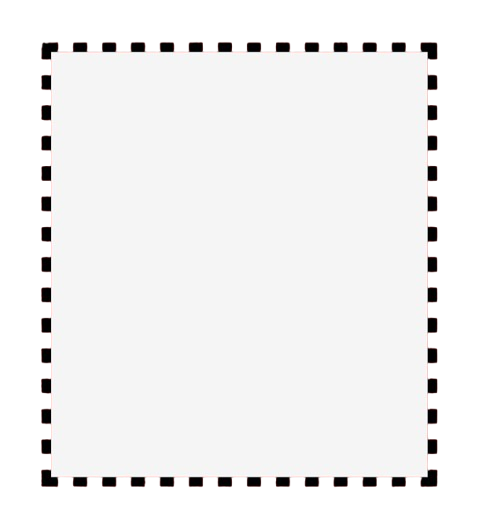

About - Microsoft Word
File
Edit
View
Insert
Format
Tools
Table
Help

B
I
U
What are Recommender Systems and how to use them
An overview of recommender systems.
A recommender system, or a recommendation system, is an algorithm used to filter information. Gathering information provides suggestions that are most relevant to a particular user. This is helpful when someone needs to decide on a platform where there is an overwhelming amount of information.
Collaborative filtering
Collaborative filtering builds a model using the user’s past decisions, such as past watches or ratings on a certain product, and similar behaviors from other users to predict what the user might enjoy. It uses a user-rating matrix and does not require other user information such as demographics or other information besides the ratings. This is a major strength of collaborative filtering because it relies on minimal information and can recommend items without understanding their contents.
Last.fm recommends songs by observing what bands and individual tracks the user has listened to regularly and comparing those against the listening behavior of other users. Last.fm will play tracks that do not appear in the user’s library but are often played by other users with similar interests. As this approach leverages the behavior of users, it is an example of a collaborative filtering technique. Last.fm requires a lot of information about a user to make accurate recommendations. This is an example of the cold start problem, common in collaborative filtering systems. (source: WiKipedia, https://en.wikipedia.org/wiki/Recommender_system)
Collaborative filtering assumes that people who agreed in the past will agree in the future. It identifies another user with a history similar to the current user and generates predictions using this neighborhood. These methods are considered memory-based and model-based approaches.
Some problems that may interfere with the collaborative filtering algorithms are cold start, scalability, and sparsity. Cold starts refers to the lack of data to make accurate recommendations. There is also a need for a large amount of computation power, which is often necessary to calculate recommendations, making the algorithm less scalable. Also, there is a huge amount of products and items on the internet, meaning ratings are rather sparse.
Implement Collaborative Filtering in Python
We will be using a dataset containing the top brands and cosmetics reviews. This dataset can be found on the Kaggle website: https://www.kaggle.com/datasets/jithinanievarghese/cosmetics-and-beauty-products-reviews-top-brands
rating_list = pd.read_csv('top_brands_cosmetics_product_reviews.csv', sep=',', usecols=['author', 'product_title', 'product_rating', 'review_date'])
items = pd.read_csv('top_brands_cosmetics_product_reviews.csv',
usecols=['product_title', 'product_url', 'brand_name'], encoding='latin-1')
print(f'Number of ratings: {rating_list.author.nunique()} | Number of items: {items.product_title.nunique()}')
Pivot the training using the user-item matrix.
X_train, X_test, y_train, y_test = train_test_split(rating_list, rating_list.product_rating, test_size=0.1, random_state=42)
ratings = X_train.pivot_table(index=['author'], columns=['product_title'], values='product_rating').fillna(0)
mean_ratings = ratings.mean(axis=1)
print(f'Number of users: {ratings.shape[0]} | Number of items: {ratings.shape[1]}')
Calculate similarity.
def get_all_recommendations(user_id, model, use_means=True):
distance, knn = model.kneighbors(ratings.fillna(0)) # nearest neighbors
knn = pd.DataFrame(knn + 1, index=ratings.index)
sim = pd.DataFrame(1 - distance, index=ratings.index) # invert the distance
neighbors = knn.loc[user_id, 1:]
similarities = sim.loc[user_id, 1:]
similarities.index = ratings.loc[neighbors].index
if use_means:
return pd.Series(mean_ratings.loc[user_id] + ratings.loc[neighbors].subtract(mean_ratings.loc[neighbors], axis='index').mul(similarities, axis='index').sum(axis='index') / similarities.sum(), name='recommendation')
else:
return pd.Series(ratings.loc[neighbors].mul(similarities, axis='index').sum(axis='index') / similarities.sum(), name='recommendation')
Compute a single recommendation for a given user, product, and model.
def get_recommendations (user_id, product_id, model, use_means=True):
if product_id not in ratings.columns:
return 2.5
recommendations = get_all_recommendations(user_id, model, use_means=use_means)
return recommendations.loc[product_id]
Compute Root Mean Squared Error (RMSE) to evaluate to predict ratings for all products for every user in the dataset. Then, line the predicted ratings with the actual ratings in the test set and calculate the RMSE.7.
model = NearestNeighbors(n_neighbors=40, metric='cosine')
model.fit(ratings.fillna(0))
def get_RMSE(X_test, model, use_means=True):
group = X_test[['product_title', 'product_rating']].groupby(X_test.author)
mse = []
i = 0
for key in group.groups:
if key not in rating_list['author']:
continue # Skip users not in the dataset
predictions = get_all_recommendations(key, model=model, use_means=use_means)
rated_products = group.get_group(key).set_index('product_title')
df = rated_products.join(predictions).dropna().reset_index()
mse.append(df)
if i % 100 == 0:
score = np.sqrt(mean_squared_error(df.product_rating, df.recommendation))
print(f'{i}/{X_test.author.nunique()} - RMSE: {score:.4f}')
i += 1
mse = pd.concat(mse).reset_index(drop=True)
score = np.sqrt(mean_squared_error(mse.product_rating, mse.recommendation))
print(f'{X_test.author.nunique()}/{X_test.author.nunique()} - RMSE: {score:.4f}')
get_RMSE(X_test, model)
ratings_dict = {
"item": [1, 2, 1, 2, 1, 2, 1, 2, 1],
"user": ['A', 'A', 'B', 'B', 'C', 'C', 'D', 'D', 'E'],
"rating": [1, 2, 2, 4, 2.5, 4, 4.5, 5, 3],
}
df = pd.DataFrame(ratings_dict)
reader = Reader(rating_scale=(1, 5))
data = Dataset.load_from_df(df[["user", "item", "rating"]], reader)
movielens = Dataset.load_builtin('ml-100k')
trainingSet = movielens.build_full_trainset()
algo.fit(trainingSet)
def get_recommendation(id_user, id_movie, ratings):
#cosine similarity of the ratings
similarity_matrix = cosine_similarity(ratings.fillna(0), ratings.fillna(0))
similarity_matrix_df = pd.DataFrame(similarity_matrix, index=ratings.index, columns=ratings.index)
cosine_scores = similarity_matrix_df[id_user]
ratings_scores = ratings[id_movie]
ratings_scores.dropna().dot(cosine_scores[~ratings_scores.isna()]) / cosine_scores[~ratings_scores.isna()].sum()
return np.dot(ratings_scores.dropna(), cosine_scores[~ratings_scores.isna()]) / cosine_scores[
~ratings_scores.isna()].sum()
get_recommendation(196, 8, ratings) # get recommandations for user 196 for movie 8
Content-based filtering
Content-based filtering approaches utilize a series of discrete, pre-tagged characteristics of an item to recommend additional items with similar properties. It uses item features to select and return items relevant to what the user is looking for. Some content-based recommendation algorithms match items according to their description rather than the actual content.
Pandora uses the properties of a song or artist to seed a queue that plays music with similar properties. User feedback is used to refine the station’s results, deemphasizing certain attributes when a user “dislikes” a particular song and emphasizing other attributes when a user “likes” a song. This is an example of a content-based approach. Pandora needs very little information to start, it is far more limited in scope (for example, it can only make recommendations that are similar to the original seed). (source: Wikipedia, https://en.wikipedia.org/wiki/Recommender_system)
The method uses the description of the product and the profile of the user, making it suited for situations where there is known data on an item but not on the user. Content-based recommenders treat recommendation as a user-specific classification problem and learn a classifier for the user’s likes and dislikes based on an item’s features. Keywords are used to describe items, and a user profile is built to list the user’s likes and dislikes. Various candidate items are compared with items previously rated by the user, and the best-matching items are recommended. A widely used algorithm is the TF-IDF representation. There are machine learning techniques such as Bayesian Classifiers, cluster analysis, decision trees, and artificial neural networks to estimate the probability that the user will like the item.
However, content-based filtering can often suggest items very similar to what a user already likes, limiting variety and making it harder to discover new things. This can create a “bubble,” where users only see certain types of content. It also depends on how well items are labeled or described, which can be a problem if there’s not enough information or if the user is new and hasn’t interacted with much content yet.
Implementing Content-Based Filtering in Python (using BOW)
metadata = pd.read_csv('top_brands_cosmetics_product_reviews.csv', low_memory=False)
# keeping the products with more than 90% of the total rating count
quantile = 0.9
metadata = metadata[metadata.product_rating_count > metadata.product_rating_count.quantile(quantile)].reset_index()
pd.DataFrame(metadata.columns, columns=['columns']).T # printing the columns
Transform the plot summaries into vector representations to be able to apply numeric machine learning algorithms.
vectorizer = TfidfVectorizer(stop_words='english', max_df=0.8, min_df=2)
metadata.review_text = metadata.review_text.fillna('')
tfidf_model = vectorizer.fit_transform(metadata.review_text)
Each plot summary will be transformed into a sequence of words to point to a high-dimensional semantic space (the TF-IDF model is used here). This counts the number of times a word appears in the document to decide the importance of the word in the document.
print(f'Matrix contains {tfidf_model.shape[0]} rows and {tfidf_model.shape[1]} columns')
The BOW (Bag of Words) model counts the number of times a word appears in a document (sparse, most of the entries in the vector are 0).
TF-IDF (Term Frequency — Inverse Document Frequency) model counts the number of times a word appears in a document but also considers how often the word appears in all documents. It down-weights words that appear frequently across documents, making them less informative than those that appear rarely. Every plot summary is encoded as a single vector whose length is equal to the size of the vocabulary of all the plot summaries, TD-IDF transforms the plot summaries into a matrix. It ignores words that appear in more than 80% of the reviews and the ones that occur in less than 2 → the noise is reduced.
Inspect the TF-IDF model using popular makeup vocabulary.
popular_terms = ['cream', 'skin', 'awesome', 'shade', 'mascara', 'red', 'powder', 'blush']
columns = vectorizer.get_feature_names_out()
tdidf_df = pd.DataFrame.sparse.from_spmatrix(tfidf_model, columns=columns)
tdidf_df[popular_terms].head()
Apply the cosine similarity between different products based on their plot summary term frequency occurrence-signature.
def get_content_based_recommendation(product_title, top_n=10, metric='cosine'):
# get the index of the product that matches the title
# the index is used to find the row in the tf-idf matrix that corresponds to the product
idx = metadata[metadata.product_title.str.lower() == product_title.lower()].empty
model = NearestNeighbors(n_neighbors=top_n, metric=metric)
model.fit(tfidf_model)
# use a k-nearest neighbors model to find the most similar products
similar_products = model.kneighbors(tfidf_model[idx], return_distance=False)[0]
# top 10 most similar products
return metadata.iloc[similar_products]
Apply the function to any product in the dataset.
get_content_based_recommendation('Olay Regenerist Whip Mini and Ultimate Eye Cream Combo')[
['product_title', 'review_rating', 'product_rating', 'product_rating_count', 'review_text']]
get_content_based_recommendation('Olay Total Effects 7 In One Anti-Ageing Day Cream Normal SPF 15')[
['product_title', 'review_rating', 'product_rating', 'product_rating_count', 'review_text']]
Hybrid systems
You can also combine the two algorithms to offer a more refined recommendation. Recommender systems help users discover items they might not have found otherwise. Recommender systems are often implemented using search engines indexing non-traditional data.
Conclusion
In conclusion, recommender systems play a key role in helping users discover relevant content and products by providing personalized suggestions. They enhance the experience by reducing the time and effort needed to find what interests them.
Draw ▾

AutoShapes ▾
 Page 1
Sec 1
1/1
At 1"
Ln 1
Col 1
REC
TRK
EXT